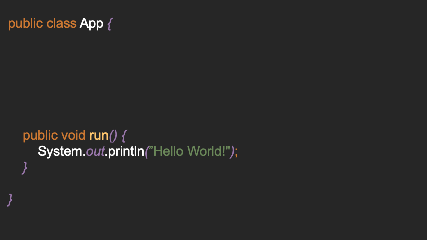

Entrypoint

The framework makes it very easy to define multiple "entry points"
(annotated with @Entrypoint) without always having to write different main methods:
public class Application {
@Entrypoint("World")
public void printWorld() {
System.out.println("World!");
}
@Entrypoint("Echo")
public void runEcho(@Prompt("What") final String what) {
System.out.printf("Echo! %s%n", what);
}
}
If you now start the program, invoking Starter.start in your main method, you will be asked which
program you want to run:
Console Output:
1. Application::World@printWorld ()
2. Application::Echo@runEcho ()
[?] Select Method to run [1-2]: 1
---
Hello!
---
Parse Arguments
A method can have any number of arguments. If the type is a standard type (defined in the
package: io.d2a.eeee.wrapper.wrappers)
the user is asked for an input and tries to parse the input:
You can customize the prompt by setting the @Prompt-annotation. This is optional, but without the
annotation, you'd be prompted with arg0, ..., arg{n}.
Defaults
Default values can be specified using the @Default annotation.
@Entrypoint("Echo")
public void echo(
@Default("Nice") @Prompt("Echo")
final String input
) {
System.out.println("Echo! "+input);
}
Console-Output:
Validation
If you want to limit numbers to a certain range, or to limit a string to a certain length, you can
use the @Range-annotation. The @Range-annotation accepts 1 to 3 arguments:
@Range({1, 10}) -> 1 to 10
@Range({1, 10, 2}) -> 1 to 10 with steps of 2: 1, 3, 5, 7, 9
@Range(10) -> 0 to 10
Console-Output:
Transform
String inputs can be transformed during the parse process using the @Transform annotation. You can
choose from the following actions:
- UPPER
- LOWER
- TRIM
- REVERSE
@Entrypoint
public void run(
@Prompt("Name")
@Transform({Types.UPPER, Types.REVERSE})
final String name
){
System.out.println(name);
}
// input "Michael" will be transformed to "LEAHCIM"
Custom Wrappers
If you want to use your own types as parameters, these types must implement the Wrapper<T>
interface:
public class Rectangle implements Wrapper<Rectangle> {
/**
* @param scanner contains a Scanner which can be used to ask for input in the console
* @param prompt contains the value of @Prompt() or the parameter name if empty
* @param provider can be used to request annotations of a parameter, e. g. @Max
* @return
*/
@Override
public Rectangle wrap(Scanner scanner, String prompt, AnnotationProvider provider) {
// See below for information about the Factory helper class
return Factory.createClass(scanner, Rectangle.class);
}
}
Now the rectangle can be used as a parameter in an Entry method:
Console-Output: